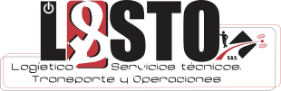

Propuesta 1
Set Nocturno
Interfaz en clave oscura con tipografía display fuerte; estética de set de rodaje nocturno. Alto impacto visual, pensada para monitoreo y torre de control.
Abrir propuesta 1 →
Prototipos navegables (web y móvil) para elegir una sola dirección visual antes de desarrollar el frontend. Cada propuesta cubre las siete superficies de la plataforma: inicio de sesión, torre de control, flujo del conductor, portal del aliado, administrativo y financiero, reportes y administración.
Interfaz en clave oscura con tipografía display fuerte; estética de set de rodaje nocturno. Alto impacto visual, pensada para monitoreo y torre de control.
Abrir propuesta 1 →Interfaz clara y densa en datos, con tipografía monoespaciada para cifras y tablas. Máxima legibilidad operativa y financiera para el trabajo diario.
Abrir propuesta 2 →Sistema de espaciado 4/8 px con acentos de marca y sensación de movimiento. Equilibrio entre claridad y dinamismo, diseñada mobile-first.
Abrir propuesta 3 →Cada propuesta incluye: Login · Torre de Control · Flujo del conductor · Portal del aliado · Administrativo y financiero · Reportes / reporteador · Administración / parámetros. Navegación web y móvil. Español (Colombia). Accesibilidad WCAG 2.2 AA como objetivo.